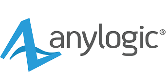
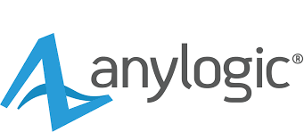

شبیه سازی سناریوی انتقال تختال به نورد گرم 2
در این پروژه تعیین نوع و تعداد مکانیزم مناسب جهت انتقال تختال از واحد 28 به نورد گرم 2 با استفاده از ابزارهای شبیه سازی انجام گردیده است. به همین منظور ابتدا واحد 28 به صورت کامل شبیه سازی شده تا نرخ خروج تختال از این واحد به دست آید و به عنوان ورودی برای مکانیزم های انتقال به نورد گرم 2 استفاده شود. از سایر اهداف پروژه بررسی نیاز به توسعه فضاهای هوا خنک به هنگام راه اندازی نورد گرم 2 است. همچنین تاثیر وجود سیکل آب خنک بر ازدحام داخل واحد 28 در این مدل بررسی شده است.

تعیین نوع و تعداد مکانیزم مناسب جهت انتقال تختال از واحد 28 به نورد گرم 2

 
